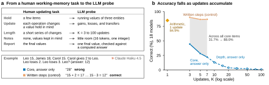

WMIP: A Working-Memory-Inspired Programmable Probe of Cumulative State Tracking in Large Language Models
1Tohoku University 2Lappeenranta-Lahti University of Technology LUT 3Texas A&M University 4Worcester Polytechnic Institute
*Corresponding author
Leaderboard
Accuracy (%) with the published scoring rules. Paper rows are the 18 models in the paper. Community rows are runs submitted by others and rescored from their responses. Select a column to rank by it.
Add your model
Run all three banks with python wmip.py run, package the run, and send it as a pull request or through the result form. Every submission is rescored from its raw responses before it joins the table.
Can you keep track?
Remember these scores.
They will disappear when you start.
Question and solution
Game settings
Generate a batchJSONL with reference answers
Core-task preview. Generator source
Overview

Citation
@misc{hou2026wmip,
title = {{WMIP}: A Working-Memory-Inspired Programmable Probe of Cumulative State Tracking in Large Language Models},
author = {Hou, Dengzhe and Jiang, Lingyu and Li, Deng and Li, Zirui and Lin, Fangzhou and Yamada, Kazunori D},
year = {2026},
eprint = {2603.27343},
archivePrefix = {arXiv},
primaryClass = {cs.AI},
url = {https://arxiv.org/abs/2603.27343}
}
Working-Memory-Inspired Probe
Generate new state-tracking tests for language models.
The frozen main bank contains 840 items.